11/05/2022 — Bài đố – ca nào trong số này, nếu có, là OMI? Dấu hiệu Cờ Nam Phi là gì? Bạn có kích hoạt phòng thông tim không? Bạn có phân biệt được trên điện tâm đồ không?
Bản dịch tiếng Việt của bài "Quiz post – which of these, if any, are OMI? What is the South African Flag Sign? Will you activate the cath lab? Can you tell the difference on ECG?" – Dr. Smith’s ECG Blog. Giữ nguyên toàn bộ 21 hình ảnh của bản gốc.
Tác giả: Pendell Meyers, bổ sung và biên tập bởi Grauer, Smith, McLaren
Dưới đây là 5 ca bệnh người lớn (tuổi từ 40-70) đều đến khoa cấp cứu (ED) vì đau ngực cấp không do chấn thương, mà theo người khám thì ít nhiều nghe giống một hội chứng vành cấp (ACS) tiềm tàng.
Bạn hãy xem từng điện tâm đồ và quyết định đó là OMI, không phải OMI, hay một tình trạng khác.
Mục tiêu của chúng tôi trong bài này là so sánh và đối chiếu các ca nhồi máu cơ tim do tắc (OMI) với các ca dương tính giả bắt chước chúng. Trong bài này, chúng tôi sẽ xem xét kiểu phân bố trước-bên đã được mô tả là “dấu hiệu Cờ Nam Phi” (South African Flag Sign). (SAFS)
Rất khó mô tả vì sao một chuyên gia điện tâm đồ có thể dễ dàng phân biệt 5 ca này. Một số ca trong đây sẽ có vẻ vi phạm một vài quy tắc kinh nghiệm (rule of thumb) thường được dạy trong giáo trình điện tâm đồ cơ bản. Rốt cuộc, điều quan trọng là độ chính xác – bạn có thể nhận ra ca nào là “thật” và ca nào là “giả” không? Hiện nay, thứ duy nhất có thể phân biệt được là sự diễn giải của chuyên gia con người – người đã dành nhiều thời gian để ghi nhớ các hình ảnh điện tâm đồ này và đối chiếu chúng với kết cục của bệnh nhân.
Hãy nghĩ về khuôn mặt: bạn có thể nhận ra người bạn của mình ngay lập tức. Nhưng bạn có thể mô tả vì sao không? Bạn có đo mũi cô ấy không? Kích thước đôi mắt cô ấy? Không. Một điện tâm đồ cũng giống như một khuôn mặt và bạn cần làm quen với chúng để có thể nhận ra chúng. Đây chính là điều chúng tôi hy vọng dạy được cho trí tuệ nhân tạo.
Phần bàn luận ngắn về hình ảnh SAFS sẽ nằm ở cuối bài để ôn tập.
Ca 1

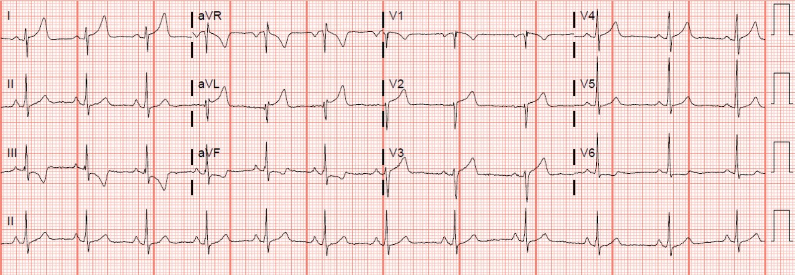
– ca này có sẵn một điện tâm đồ cũ, ở đây:

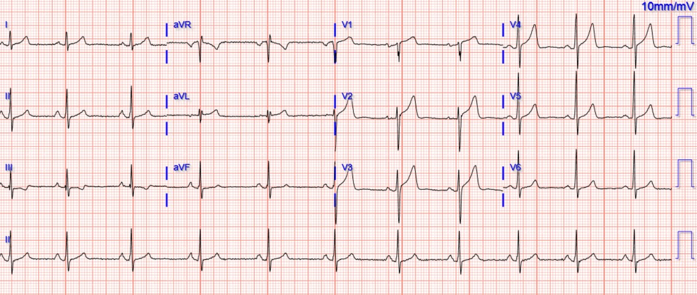
Ca 2

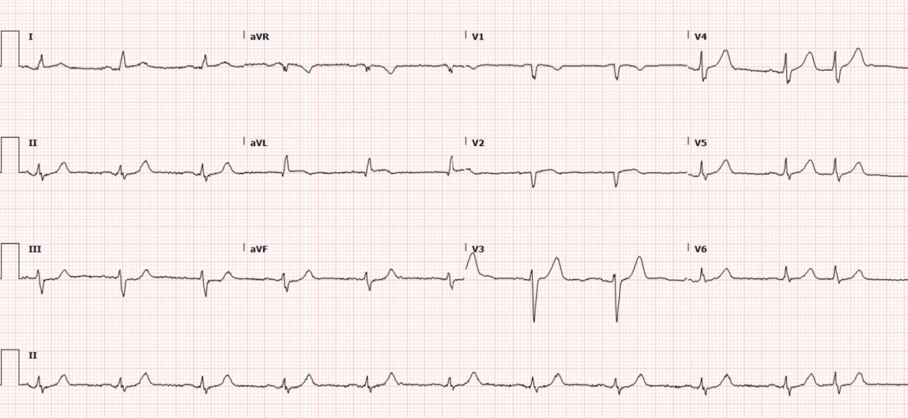
Ca 3

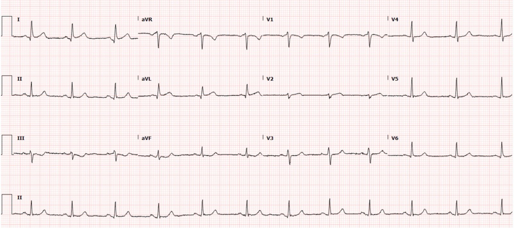
Ca 4

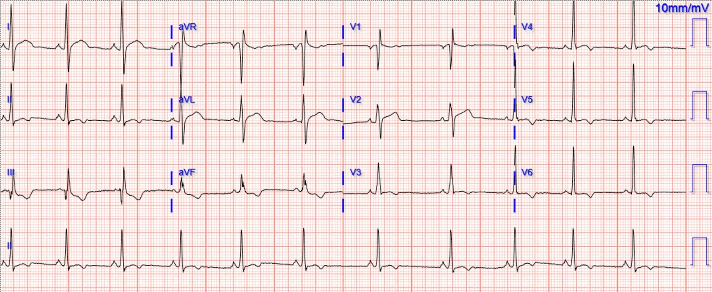
Ca 5

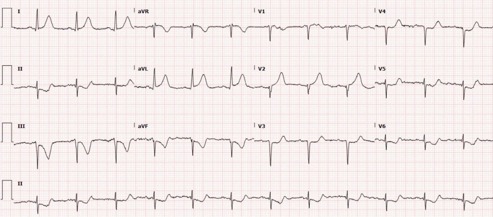
Cuộn xuống để xem đáp án và bàn luận.
Ca 1 – Biến thể bình thường (Không phải OMI, dương tính giả theo tiêu chuẩn STEMI)
Không kèm bất kỳ thông tin lâm sàng nào, tôi gửi ca này cho Dr. Smith và ông ngay lập tức nói “Không phải OMI.” Tôi trả lời: “Chính xác. Nhưng anh có thể hiểu vì sao những người học đầy thiện chí, đang cố học cách nhận ra sóng T tối cấp và dấu hiệu cờ Nam Phi, lại rất bực bội khi tôi nói với họ điều đó!”
Điện tâm đồ: Nhịp xoang. QRS nhìn chung trong giới hạn bình thường. ST chênh lên (STE) ở I, aVL và V2, ST chênh xuống (STD) soi gương ở III và aVF. Sóng T cao ở I và aVL, nhưng không “béo”. Theo ý kiến của tôi, chúng không phải sóng T tối cấp, vì chúng không “căng phồng như được bơm hơi”. Hình thái của STD và sóng T đảo ngược (TWI) ở III đặc biệt đặc hiệu cho KHÔNG phải OMI, và nó có dáng vẻ của LVH kèm “hình ảnh tăng gánh”. Đây là ca giả, không phải OMI.
Thông tin lâm sàng: Một phụ nữ ở độ tuổi 40 đến khoa cấp cứu vì đau ngực từng lúc trong khoảng một tuần, với một cơn hôm nay đánh thức bà dậy khỏi giấc ngủ và không chịu dứt. Có kèm sử dụng cocaine, nhưng không rõ có phải gần đây hay không.
Đây là một ví dụ về điện tâm đồ cũ được lưu trong hồ sơ:
Báo động STEMI đã được kích hoạt. Khoa tim mạch từ chối và hủy kích hoạt phòng thông tim (cath lab), được biết là vì họ tin rằng các dấu hiệu trên điện tâm đồ của bà phù hợp với các đợt sử dụng cocaine trước đây. Tôi không chắc điều đó có nghĩa là gì hoặc lập luận chính xác của họ ra sao, nhưng dù thế nào thì cũng không có chụp mạch vành nào được thực hiện.
Bệnh nhân được nhập khoa nội vì đau ngực nguy cơ cao.
Ba lần đo troponin I liên tiếp đều là 9 ng/L.
Nồng độ kali là 4,1 mEq/L.
Bà tự ý xuất viện trái lời khuyên y khoa trước khi được làm thêm bất kỳ thăm dò nào.
Ca 2 – OMI nhánh chéo thứ nhất D1 (OMI STEMI[-])
Điện tâm đồ: Nhịp xoang, QRS nhìn chung bình thường. STE kín đáo ở I và aVL, kèm sóng T đảo ngược phần cuối rất nhỏ ở aVL. STD soi gương ở II, III, aVF. V2 có gợi ý rất nhẹ của STE với đoạn ST dạng lồi. Theo kinh nghiệm của tôi, ca này khớp với nhiều ca SAFS thật trước đây, và hình thái trông giống OMI cấp ít nhất ảnh hưởng đến các chuyển đạo bên cao. Sóng T đảo ngược phần cuối nhẹ ở aVL có thể gợi ý rằng nó đang bắt đầu tái tưới máu.
Thông tin lâm sàng: Nam giới ở độ tuổi 70, đau ngực 1 giờ.
Troponin I độ nhạy cao ban đầu = 27 ng/L (dưới giới hạn trên tham chiếu (URL); tức là bình thường)
Được cho aspirin (ASA), morphin, nitroglycerin (NTG) vì đau còn tiếp diễn.
Troponin lặp lại 233, sau đó 14.000, rồi trên 25.000 ng/L
Vì không được nhận ra là OMI nên thông tim được làm quá muộn và cho thấy tắc cấp do huyết khối 100% nhánh D1, đã đặt stent.
Phân suất tống máu (EF) 35%, rối loạn vận động thành (WMA) ở cơ tim vùng trước đoạn giữa-mỏm, vùng bên và vùng mỏm.
Điện tâm đồ sau PCI:

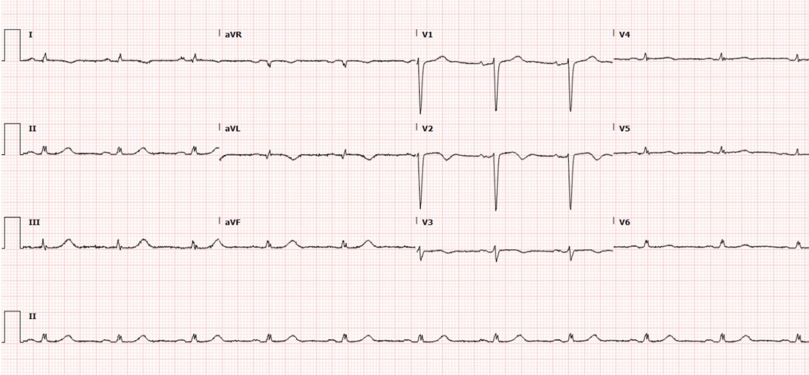
Ca 3 – OMI nhánh chéo thứ nhất D1 (OMI STEMI[-])
Gửi cho Dr. Smith mà không kèm thông tin gì, ông ngay lập tức trả lời: “Ca này là OMI.”
Điện tâm đồ: Nhịp xoang. QRS nhìn chung trong giới hạn bình thường. Tương tự ca trên với STE ở I và aVL kèm STD soi gương ở III và aVF. V2 tương tự ca trên. Lần này sóng T dương ở I và aVL. Chuyển đạo III và aVF có hình thái “xuống-lên” (down-up) rất đáng lo ngại, đặc hiệu cho STD soi gương do OMI ở chuyển đạo aVL.
Thông tin lâm sàng: Nam giới ở độ tuổi 50, có hút thuốc lá, đến viện vì đau ngực sau xương ức cấp xuất hiện ngay trước khi đến.
Troponin ban đầu dưới 6 ng/L (dưới giới hạn phát hiện).
Troponin lặp lại 17 ng/L.
Siêu âm tim cho thấy giảm động cơ tim vùng trước-bên.
Các lần troponin lặp lại: 2740, 5835, 7077 ng/L. Không chỉ định thêm lần nào.
Thông tim cho thấy tắc cấp do huyết khối nhánh D1, được đánh giá là nhỏ và không phù hợp để PCI.
Không ghi thêm điện tâm đồ nào.
Lưu ý: 2 lần troponin đầu tiên âm tính; nếu bạn dựa vào troponin để đưa ra chẩn đoán khó này, bạn sẽ mất rất nhiều thời gian và toàn bộ vùng cơ tim nguy cơ!
Ca 4 – Biến thể bình thường (Không phải OMI, dương tính giả theo tiêu chuẩn STEMI)
Gửi cho Dr. Smith mà không kèm thông tin gì, ông nói “Không phải OMI.”
Điện tâm đồ: Nhịp xoang. QRS có điện thế tương đối cao, nhưng có lẽ chưa đạt tiêu chuẩn LVH rõ ràng. Cũng có thể đơn giản là điện thế cao ở người trẻ khỏe mạnh. Có STE ở I, aVL và V2, với đoạn ST dạng lồi và STD soi gương ở II, III, aVF kèm TWI. Tôi rất nghi ngờ rằng các sóng T này không phải tối cấp (trừ khi sau này một điện tâm đồ nền chứng minh tôi sai), mà thay vào đó là một biến thể nền gây nhầm lẫn. Cũng có sóng T đảo ngược phần cuối ở V3-V6, điều này phần nào gợi tôi nhớ đến hình ảnh sóng T đảo ngược lành tính (một biến thể bình thường khác). Theo kinh nghiệm của tôi, điện tâm đồ này đơn giản là không trông giống OMI.
Xem ở đây nhiều ví dụ về “sóng T đảo ngược lành tính”, giống hệt những gì bạn thấy ở đây tại V3-V6
Thông tin lâm sàng: Một người đàn ông ở độ tuổi 50 đến viện vì đau ngực cấp kéo dài vài giờ.
Hai lần troponin tại khoa cấp cứu đều dưới 6 ng/L.
Có nhiều điện tâm đồ cũ trong hồ sơ qua nhiều năm, bao gồm điện tâm đồ này:

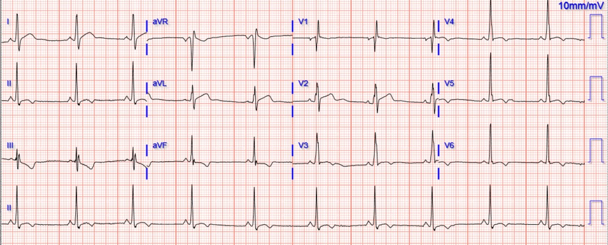
Không tìm thấy nguyên nhân đau ngực nguy hiểm nào khác. Ông được cho xuất viện.
Ca 5 – OMI LAD đoạn giữa (ca dễ nhất trong cả 5 ca, nhưng vẫn là OMI STEMI[-])
Điện tâm đồ: Nhịp xoang. QRS nhìn chung bình thường, ngoại trừ tăng tiến sóng R kém và trục lệch trái (có thể mô tả là LAFB). Sóng T tối cấp ở I, aVL và V2, STE ở aVL và V2. STD soi gương ở II, III, aVF (do OMI vùng bên cao) và STD ở V3-V6 (có vẻ trở nên tối đa ở V6, nhiều khả năng chỉ ra một phần thiếu máu cục bộ dưới nội tâm mạc). Biến dạng phần cuối QRS ở aVL. Ca này là OMI.
Thông tin lâm sàng: Nam giới ở độ tuổi 50 đến viện vì đau ngực làm ông thức giấc 6 giờ trước.
Kích hoạt báo động STEMI, tại phòng thông tim: tắc hoàn toàn LAD đoạn giữa, đã đặt stent.
Troponin đầu tiên 12.960 ng/L, không đo thêm lần nào.
Các điện tâm đồ sau thông tim:

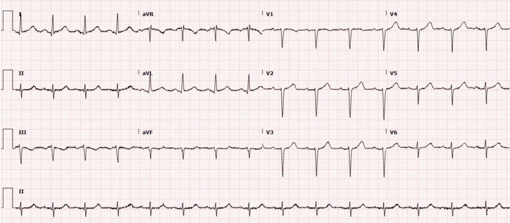

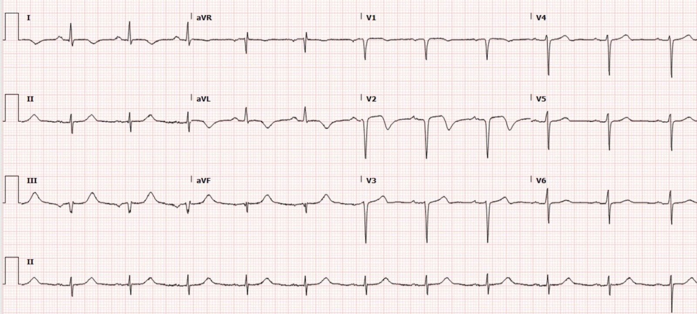
Dấu hiệu Cờ Nam Phi:
Đây là một hình ảnh điện tâm đồ đặc biệt gặp trong các ca OMI ảnh hưởng đến thành trước vách / thành trước / thành bên cao. Nó đã được mô tả là một vùng chi phối thường tương ứng với động mạch nhánh chéo thứ nhất, nhưng dĩ nhiên có sự biến đổi đáng kể về giải phẫu mạch vành và bất kỳ động mạch nào ở vùng trước và/hoặc vùng bên đều có thể gây ra hình ảnh này. Xem các sơ đồ ở trên của Littmann và cs. (trích dẫn bên dưới) để có lời giải thích trực quan vì sao có thể ghi nhớ kiểu thay đổi điện tâm đồ này bằng hình ảnh lá cờ Nam Phi.
Đây là sơ đồ dấu hiệu Cờ Nam Phi do Ken Grauer vẽ, từ bài trước này:

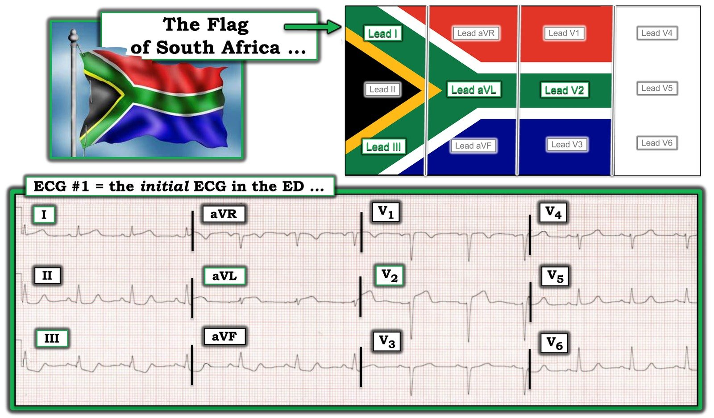
Tài liệu tham khảo:
Durant E, Singh A. Acute first diagonal artery occlusion: a characteristic pattern of ST elevation in noncontiguous leads (Tắc cấp động mạch nhánh chéo thứ nhất: một kiểu ST chênh lên đặc trưng ở các chuyển đạo không liên tiếp). Tạp chí Am J Emerg Med, 2015; 33:1326.e3-5
Littmann L. South African flag sign: a teaching tool for easier ECG recognition of high lateral infarct (Dấu hiệu cờ Nam Phi: một công cụ giảng dạy giúp nhận biết nhồi máu vùng bên cao trên điện tâm đồ dễ dàng hơn). Tạp chí Am J Emerg Med, 2015; 34.
DOI: https://doi.org/10.1016/j.ajem.2015.10.022 (liên kết DOI tới bài báo của Littmann)

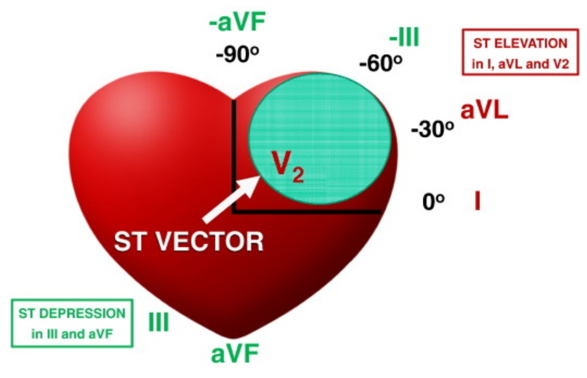

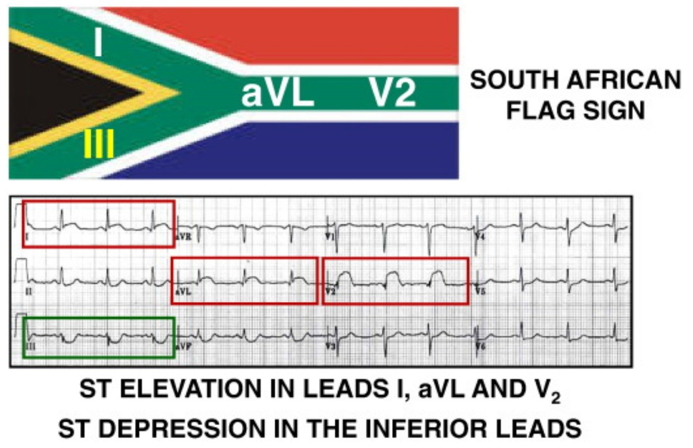
Những điểm cần học:
Nếu bạn dùng tiêu chuẩn STEMI để quyết định bệnh nhân nào cần tái tưới máu cấp cứu, BẠN SẼ SAI CẢ 5 CA NÀY. Bạn sẽ kích hoạt nhầm phòng thông tim cho 2 bệnh nhân, và trì hoãn điều trị OMI ở 3 bệnh nhân còn lại!
Có thể khó phân biệt OMI với các hình ảnh giả OMI (OMI mimic), nhưng điều này là khả thi nhờ kinh nghiệm và thực hành, trong đó bạn học dựa trên việc ghi nhớ các hình ảnh tương ứng với kết cục OMI đã được chứng minh.
Chuyên môn có thể bác bỏ một cách đúng đắn nhiều “quy tắc kinh nghiệm” về điện tâm đồ. Một số ca OMI ở trên có đoạn ST dạng lõm, và một số ca dương tính giả lại có đoạn ST dạng lồi! Nhiều ca dương tính giả ở trên quả thật có các dấu hiệu soi gương ở các chuyển đạo dưới. Dấu hiệu soi gương xuất hiện bất kể nguyên nhân của các dấu hiệu nguyên phát khu trú là gì. Nếu bạn học bằng cách xem nhiều ca bệnh và kết cục của chúng, bạn có thể nhận ra ca nào là dương tính thật và ca nào là dương tính giả.
Dấu hiệu Cờ Nam Phi là một công cụ giảng dạy hay cho kiểu phân bố OMI vùng trước-bên.

=======================================
BÌNH LUẬN CỦA TÔI, bởi KEN GRAUER, MD (11/5/2022):
===================================
Khi xem xét 5 bản ghi được chọn cho “Bài đố” (Quiz Post) hôm nay của Dr. Meyers — tôi thấy mình tự hỏi, “Điều gì ở từng ca?” — khiến tôi nghiêng về OMI hay không nghiêng về OMI?
- Như Dr. Meyers đã nói — “Rất khó mô tả vì sao một chuyên gia điện tâm đồ có thể phân biệt 5 ca này”. Lời lẽ trên giấy là không đủ — vì “các quy tắc” không phải lúc nào cũng được tuân theo.
- Thay vào đó — có một dạng “nhận diện hình ảnh” (pattern recognition) trực giác (không thành lời) cứ thế “xảy ra” — giống như cách một bác sĩ lâm sàng giàu kinh nghiệm có thể nhìn một bệnh nhân và chỉ trong vài giây đã biết chẩn đoán có khả năng nhất.
- Rõ ràng — việc nhìn thấy bệnh nhân và biết bệnh sử sẽ giúp ích cho việc diễn giải các điện tâm đồ này. Nhưng Dr. Meyers và Dr. Smith đã ngay lập tức đi đến diễn giải đúng ở từng ca mà không có lợi thế của bất kỳ thông tin bệnh sử nào.
CÁCH TIẾP CẬN CỦA TÔI:
- Khi xem xét từng ca trong 5 ca này mà không có được lợi thế của bất kỳ bệnh sử nào — tôi thấy mình đi tìm 1 hoặc 2 chuyển đạo mà tôi biết chắc là không bình thường — HOẶC — mà tôi thực sự nghĩ là trông giống một thay đổi tái cực lành tính.
- Sau đó tôi tìm các chuyển đạo lân cận (hoặc soi gương) ủng hộ cho nhận định đó.
- LƯU Ý: Hình ảnh Cờ Nam Phi (South African Flag Pattern) được BS. Meyers mô tả bên dưới càng làm tăng thêm thử thách (Để biết thêm về hình ảnh này — Xem Bình luận của tôi ở cuối trang trong bài ngày 8 tháng Tư năm 2022 của Dr. Smith’s Blog). Đó là vì tắc cấp nhánh chéo thứ 1 hoặc thứ 2 của LAD thường chỉ gây ra ST chênh lên ở 1 chuyển đạo ngực ( = chuyển đạo V2) — vì vậy bạn mất đi lợi ích tiềm năng của việc thấy ST chênh lên bất thường tương tự ở các chuyển đạo trước lân cận.
Tôi chọn 2 trong 5 ca để bình luận. Cho rõ ràng — tôi đã đặt 2 bản ghi này cạnh nhau trong Hình 1 — và đã đánh dấu những dấu hiệu mà tôi tập trung vào.

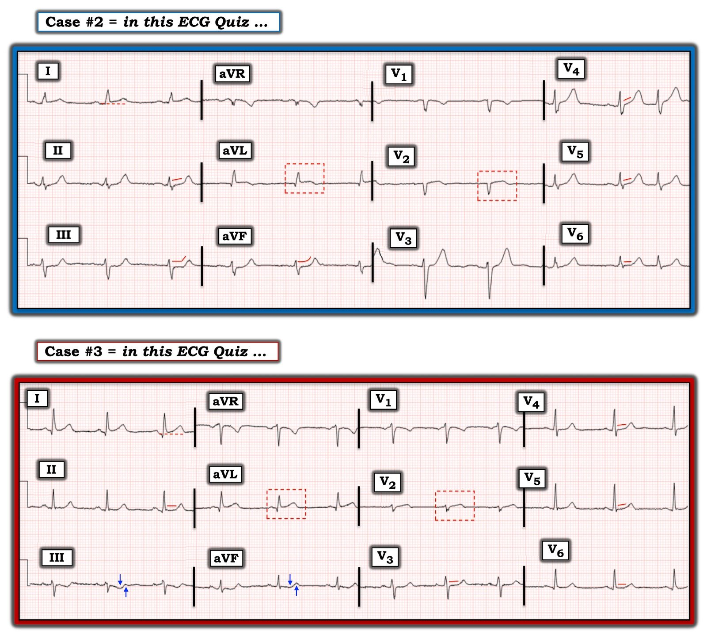
Điều gì ở 2 ca này?
Bắt đầu với Ca #2 — nhịp là nhịp xoang kèm một PAC.
- Chuyển đạo trong Ca #2 thu hút sự chú ý của tôi — là chuyển đạo aVL. Hình dạng của ST chênh lên kín đáo-nhưng-có-thật ở chuyển đạo này là không bình thường. Làm tôi lo ngại thêm là sóng q nhỏ, và dấu hiệu gợi ý sóng T bắt đầu đảo ngược. Đây không phải là hình ảnh của một thay đổi tái cực.
- Xét đến hình ảnh bất thường ở chuyển đạo aVL — ST chênh lên kín đáo ở chuyển đạo I (phía trên đường chấm ĐỎ ở chuyển đạo này) gợi ý một quá trình tương tự đang diễn ra ở chuyển đạo bên cao còn lại này.
- Xác nhận rằng hình ảnh ở chuyển đạo aVL nhiều khả năng là cấp tính — đến từ các thay đổi soi gương ở cả 3 chuyển đạo dưới (II,III,aVF). Đoạn ST thẳng đuỗn mà chúng ta thấy ở các chuyển đạo này (theo các đường ĐỎ) — rồi dẫn lên các sóng T cao rõ ràng không tương xứng (khi xét biên độ sóng R khiêm tốn) là không bình thường.
- Bình thường — có ST chênh lên nhẹ (1-2 mm) dạng lõm hướng lên ở chuyển đạo V2 và V3, thường đi kèm sóng T dương. ST dạng vòm (coving) với chênh lên nhẹ mà chúng ta thấy ở chuyển đạo V2, với hầu như không có sóng T (trong hình chữ nhật chấm ĐỎ ở chuyển đạo này) — chắc chắn không phải là hình ảnh bình thường của chuyển đạo V2. Càng làm tăng nghi ngờ — là dấu hiệu hình ảnh QS ở cả hai chuyển đạo V1 và V2.
- Sóng T ở các chuyển đạo V3-đến-V6 đều trông cao và nhọn không tương xứng khi xét biên độ sóng R khiêm tốn ở mỗi chuyển đạo này. Bằng chứng ủng hộ rằng dấu hiệu này là bất thường đến từ việc các đoạn ST bị thẳng đuỗn (các đường ĐỎ).
- ĐIỀU CỐT LÕI: Nhận thức rằng tắc cấp (OMI) nhánh chéo thứ 1 hoặc thứ 2 có thể gây ST chênh lên ở chuyển đạo aVL (đôi khi cả ở chuyển đạo I) — và chỉ ở 1 chuyển đạo ngực ( = chuyển đạo V2) nên thúc đẩy ta nghĩ đến chẩn đoán này cho Ca #2 cho đến khi chứng minh được điều ngược lại. Nghi ngờ của tôi rằng một quá trình cấp tính đang diễn ra cho đến khi chứng minh được điều ngược lại ở ca này — được củng cố bởi dấu hiệu sóng ST-T ở không dưới 10/12 chuyển đạo rõ ràng là bất thường!
Còn Ca #3 thì sao?
Một lần nữa nhịp ở Ca #3 là nhịp xoang.
- Một lần nữa — chuyển đạo V2 thu hút sự chú ý của tôi, vì hình dạng của ST chênh lên kín đáo-nhưng-có-thật ở chuyển đạo này (trong hình chữ nhật chấm ĐỎ) — đơn giản là không bình thường.
- Mặc dù có thấy một sóng r khởi đầu nhỏ-nhưng-hiện-diện ở chuyển đạo V1 và V2 của Ca #3 — không còn nghi ngờ gì rằng đoạn ST dẹt ở các chuyển đạo V3-đến-V6 là không bình thường (đặc biệt khi xét sự tương phản về hình dạng giữa ST chênh lên kín đáo ở chuyển đạo V2 — và đoạn ST thẳng đuỗn rõ rệt ở chuyển đạo V3).
- Trái với hình dạng của đoạn ST chênh lên ở chuyển đạo aVL của Ca #2 — ban đầu tôi không chắc chắn ở Ca #3, khi chỉ nhìn riêng chuyển đạo aVL, rằng ST chênh lên này phản ánh OMI.
- Dù vậy — 2 chuyển đạo chi thu hút sự chú ý của tôi ở Ca #3 là chuyển đạo III và aVF. Ở cả hai chuyển đạo này, ngoài ST chênh xuống — còn có phần cuối sóng T dạng “xuống-lên” rõ ràng là bất thường — và gợi ý mạnh mẽ thay đổi soi gương gần đây (nếu không phải là cấp tính) với ST chênh lên ở chuyển đạo aVL.
- Xét đến hình ảnh sóng ST-T chắc chắn bất thường ở chuyển đạo III và aVF trong Ca #3 — đoạn ST thẳng đuỗn kín đáo-nhưng-hiện-diện hơn nhiều mà chúng ta thấy ở chuyển đạo II hoàn tất hình ảnh “thay đổi soi gương” ở các chuyển đạo dưới.
- Tương tự — vì nay đã biết rằng hình dạng ST chênh lên ở chuyển đạo aVL của Ca #3 là bất thường — hình dạng sóng ST-T tương tự ở chuyển đạo I chắc chắn phản ánh cùng một quá trình đang diễn ra.
- ĐIỀU CỐT LÕI: Mặc dù “dáng vẻ” của Ca #3 không hoàn toàn giống với những gì chúng ta thấy ở Ca #2 (Đặc biệt lưu ý biên độ sóng T giảm ở nhiều chuyển đạo) — “chủ đề” của Ca #3 là tương tự. Nghĩa là — Ca #3 biểu hiện ST chênh lên ở chuyển đạo I, aVL và V2 — ST chênh xuống ở chuyển đạo III và aVF, với hình ảnh sóng T “xuống-lên” cấp tính — và tổng cộng, không dưới 10/12 chuyển đạo có sóng ST-T rõ ràng bất thường. Một lần nữa — chẩn đoán nên là OMI cấp của nhánh chéo thứ 1 hoặc thứ 2 cho đến khi chứng minh được điều ngược lại.
Còn các bản ghi không phải OMI thì sao?
Tôi ước gì mình có câu trả lời dễ dàng về cách nhận ra nhanh 2 bản ghi trong Bài đố của BS. Meyers mà không phải là OMI.
- Ở đây — Bệnh sử thực sự giúp ích! Ngay cả ST chênh lên rõ rệt cũng thường lành tính khi một người trẻ tuổi không có triệu chứng hoặc đến khám với triệu chứng không điển hình. Mặt khác — một bệnh sử đáng lo ngại là chỉ dấu rõ ràng cho thấy cần thêm thông tin cùng với xét nghiệm chẩn đoán (tức là, siêu âm tim khẩn trong lúc đau ngực — troponin — ghi lại điện tâm đồ — tìm điện tâm đồ cũ để so sánh). NẾU còn nghi ngờ — tốt nhất là nên thận trọng cho đến khi bạn có thể loại trừ một biến cố cấp tính.
Bạn càng thấy nhiều biến thể không phải OMI — bạn càng giỏi nhận ra chúng! Có rất nhiều ví dụ trong suốt Dr. Smith’s ECG Blog.
- Xem bài ngày 8 tháng Tư năm 2017 — để có một bài tổng quan hay của BS. Smith và BS. Dunbar về một số biến thể bình thường có sóng T đảo ngược.
- Xem Bình luận của tôi ở cuối trang trong bài ngày 11 tháng Chín năm 2020 — cho thấy rất nhiều ST chênh lên ở một người trẻ tuổi.
- Bài ngày 22 tháng Tám năm 2020 — Ngay cả các biến thể tái cực đôi khi cũng có thể cho thấy thay đổi sóng ST-T “động” (dynamic).
- Xem Bình luận của tôi trong bài ngày 14 tháng Mười Một năm 2019 — về việc phân biệt giữa T-QRS-D (biến dạng phần cuối QRS – Terminal QRS Distortion) với các biến thể tái cực.
- Còn rất nhiều bài khác — và chúng tôi vẫn tiếp tục đăng thêm!